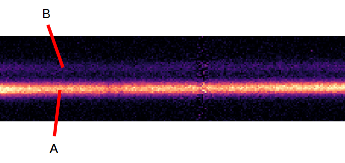

Special Use Cases¶
In this section, we provide special use-case examples to document and explore the versatility of the PyLongslit software. All users are welcome to contribute to this section by providing their own use-case examples, which will be added to the documentation (see developing guidelines for more information on how to contribute).
Extracting closely spaced spectra¶
With a longslit instrument, it is possible to obtain distinct spectra of closely spaced sources within the same object, such as lensed quasars. The spectra in such cases are placed so closely that automatic modeling/fitting routines will sometimes fail. The software can deal with such cases, but a fair amount of manual work is required. The following describes how to extract distinct 1d spectra of very closely spaced sources.
Note
Before you execute the following steps, make sure you have tried to use the software on a more simple case, such as the tutorial data. You will need a basic understanding of the routines in order to perform the following steps.
Follow the regular pipeline steps up to object tracing.
- Create copies of the reduced files such that for every exposure, you have a copy corresponding to every spectrum you want to extract.
For example, if you have 3 reduced exposures of the same object:
├── output_directory │ ├── reduced_science_exposure_1.fits │ ├── reduced_science_exposure_2.fits │ ├── reduced_science_exposure_3.fits
And within your object, you have two closely spaced spectra A and B:
Then the copied filenames could look like this:
├── output_directory │ ├── reduced_science_exposure_1_A.fits │ ├── reduced_science_exposure_1_B.fits │ ├── reduced_science_exposure_2_A.fits │ ├── reduced_science_exposure_2_B.fits │ ├── reduced_science_exposure_3_A.fits │ ├── reduced_science_exposure_3_B.fits
Notice that the files without the
_Aor_Bsuffix have been deleted. In the later object tracing, the software will connect the object traces to the reduced files by the filename, so it is important that the filenames are unique for every traced spectrum.
- Run the manual object tracing routine on all of the copied files.
(Run the regular object tracing for the standard star if you are using one - skip the science files in the regular object tracing by pressing
qat every science spectrum.)
- Extract the distinct spectra by running the (important) simple extraction routine on the copied files.
The reason for running the simple extraction is that the simple extraction puts hard box-like boundaries on the extraction region, which is needed for the closely spaced spectra. The hard boundaries prevent the spectra from ‘’bleeding’’ into another. You might need to be conservative with what FWHM guess you use. The QA plot from the simple extraction can be used to asses if the extraction region is correct.
Flux the spectra by running the flux calibration routine on the copied files.
Lastly combine the fluxed spectra according to the distinct sources.
For the example above with distinct sources A and B, the relevant part of the configuration file would look like this:
"combine": { "object_A": ["exposure_1_A.fits", "exposure_2_A.fits", "exposure_3_A.fits"], "object_B": ["exposure_1_B.fits", "exposure_2_B.fits", "exposure_3_B.fits"] }
{kind=link}